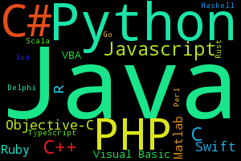

Overview
There are many programming languages and they all have different approaches to problem solving.
Some of them, such as SQL, have different and specific uses entirely.
The most common types of languages are object oriented and procedural.
- Object oriented: usually deal with user-created objects, easy to draw analogies to real life.
- Functional: very close to pure math. Easier to solve complex problems, harder to do simple things.
Languages
- Java
- C
- Python
- PHP
- SQL
- Assembly